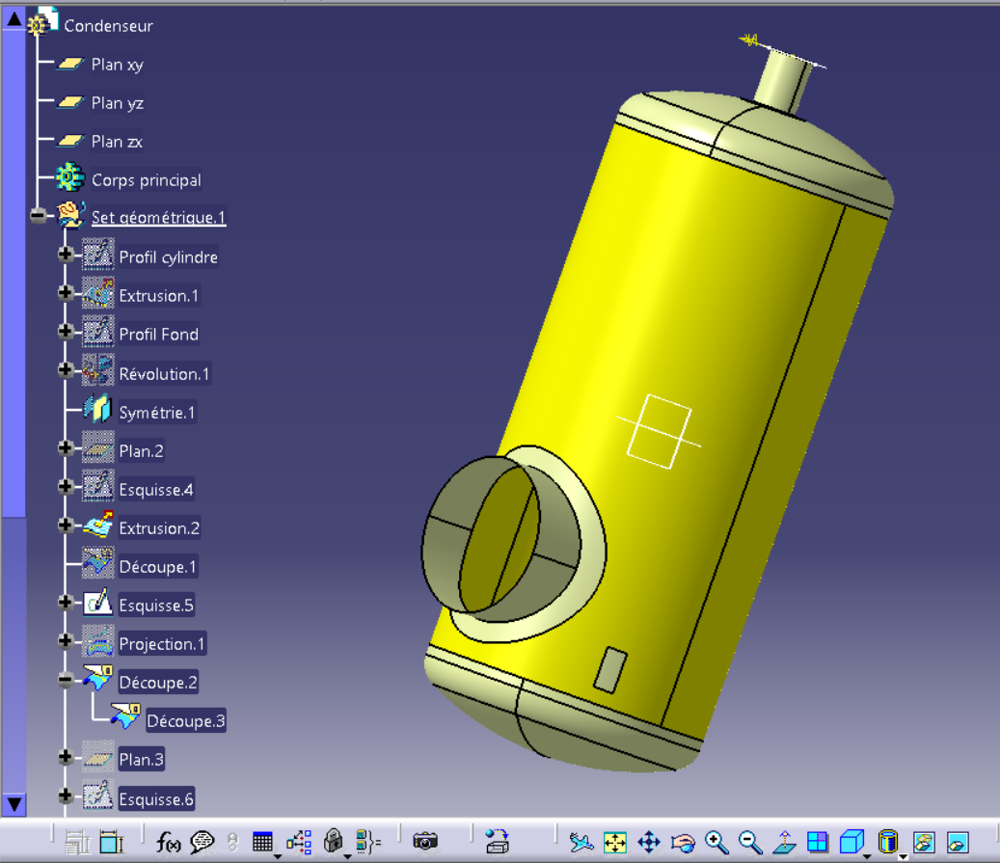
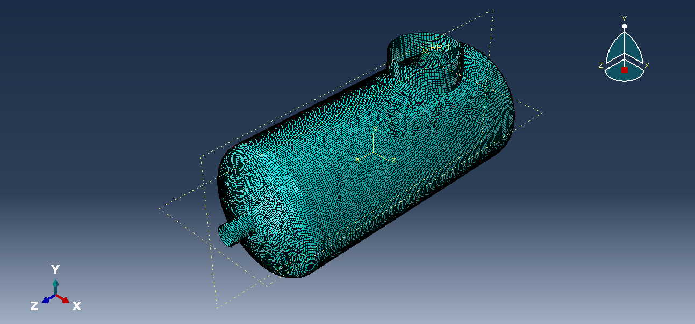
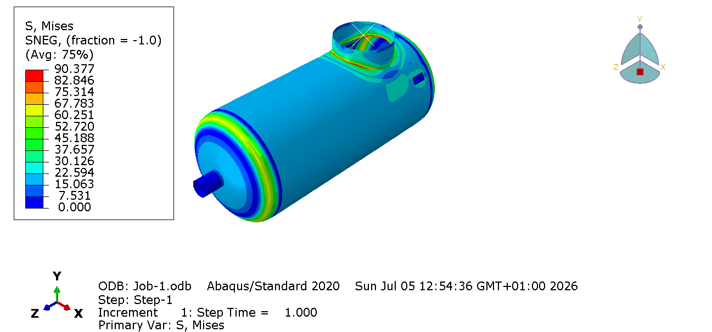
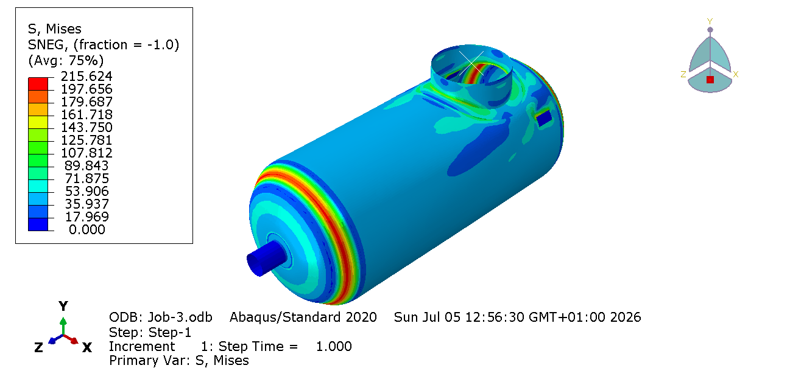
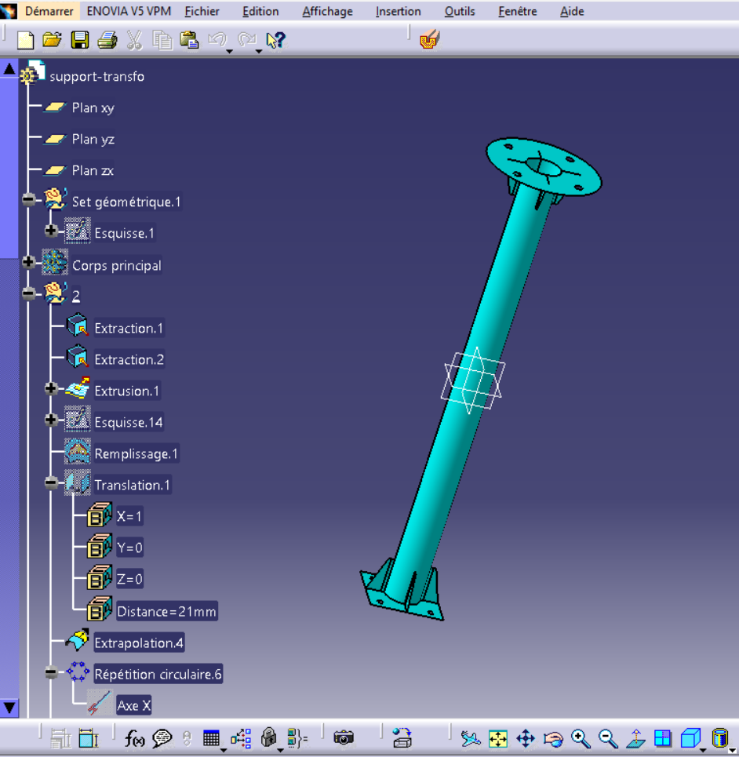
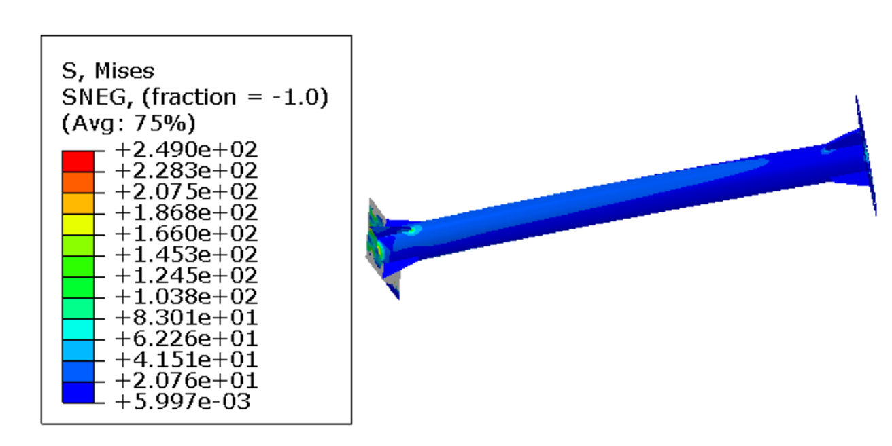
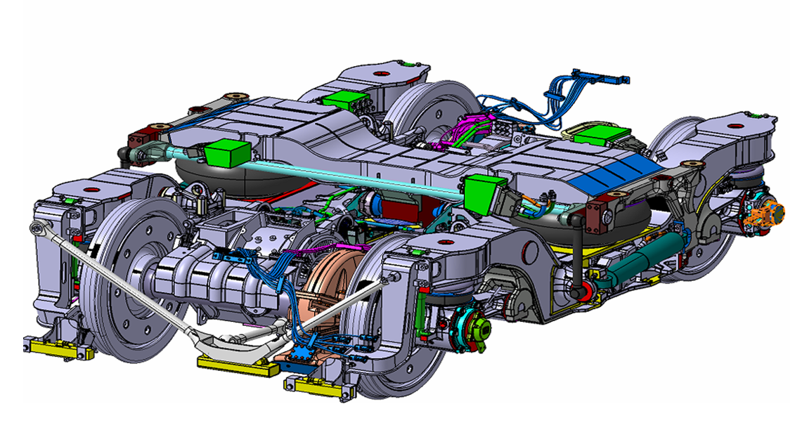
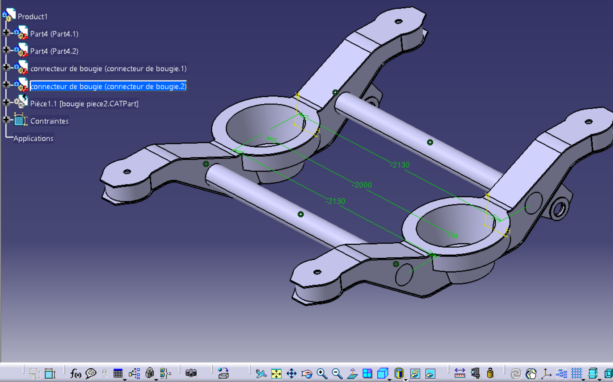
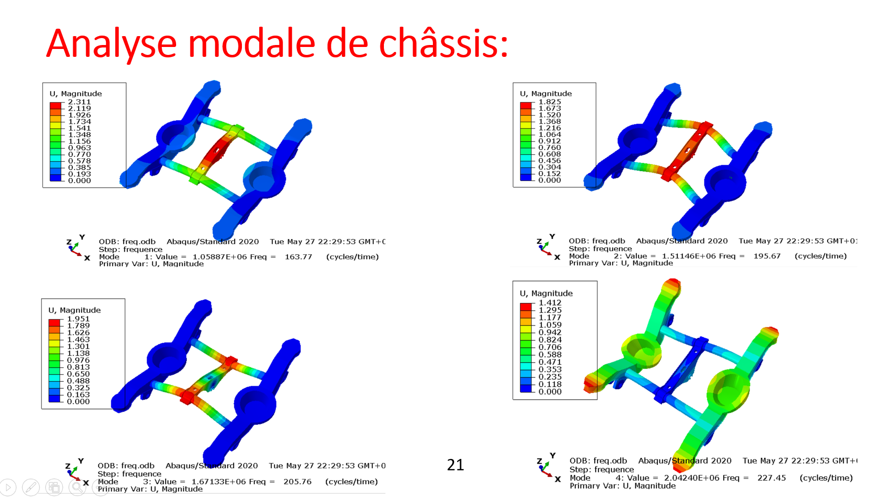

Études de dimensionnement mécanique
Conception et validation d'un condenseur-réservoir sous pression selon le CODAP et simulation par éléments finis avec Abaqus
Vérification des épaisseurs minimales de la virole, du fond et des zones critiques selon le CODAP, avec simulation du comportement mécanique du réservoir sous pression interne.
Données de calcul
Le tableau ci-dessous présente les pressions, températures et épaisseurs de corrosion retenues pour les deux situations réglementaires : service et épreuve.
| Paramètre | Situation de service | Situation d'épreuve |
|---|---|---|
| Code de calcul | CODAP 2010 | |
| Capacité | 2300 L | |
| Fluide | Vapeur d'eau | |
| Matériau | P265GH | P265GH |
| Pression P (bar) | 2.5 Bar | 3.75 Bar |
| Température T (°C) | 130 °C | 100 °C |
| Épaisseur de corrosion (mm) | 2 mm | 2 mm |
Modélisation 3D sous CATIA V5

Simulation numérique par MEF sous Abaqus



Étude d'un support de transformateur électrique
Calcul des charges de vent selon les règles françaises NV65, suivi d'une simulation statique et modale du support afin de valider son dimensionnement.le matériau utilisé est :S275.
Modélisation 3D

Simulation numérique

Modélisation et Analyse vibratoire du châssis de bogie Y32 de train par la méthode des éléments finis
Le bogie Y32 est un organe essentiel du matériel ferroviaire, assurant la liaison entre la caisse du véhicule et la voie ferrée. Son châssis supporte les charges statiques et dynamiques transmises lors du roulement, et doit garantir la tenue mécanique et le confort de circulation dans toutes les conditions d'exploitation.

Modélisation 3D

Analyse modale

Conception d'une plateforme digitale Twin (jumeau numérique)d'une éprouvette métallique normalisée pour un essai de traction
Un jumeau numérique est une représentation virtuelle d'un système physique, mise à jour en continu à partir de données réelles, permettant de simuler, prédire et analyser son comportement sans intervenir directement sur le système réel.
Comparaison entre étude expérimentale et numérique par Abaqus
Le fichier Excel ci-dessous présente la comparaison détaillée entre les résultats de l'étude expérimentale et ceux obtenus par simulation numérique sous Abaqus.